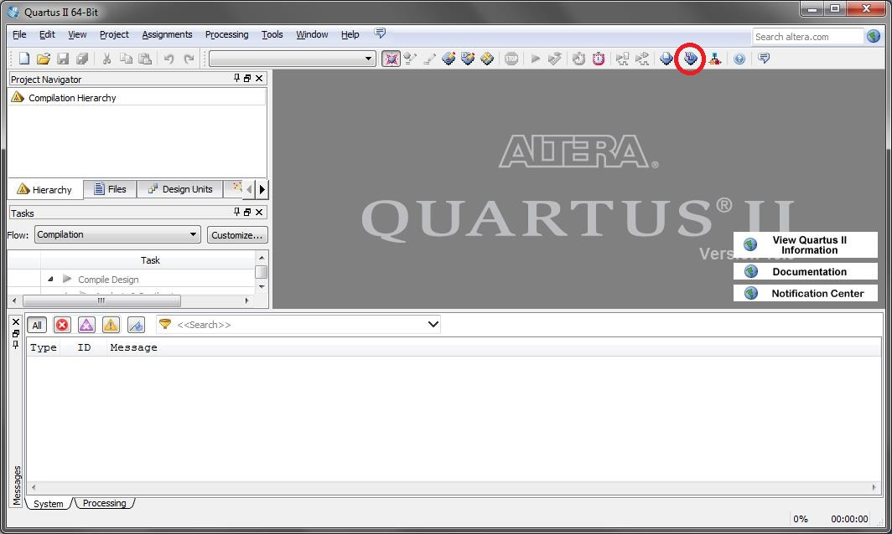

Инструкция по программированию плат -М блоков
- Закоротить между собой отверстия 11 и 12
- Подключить программатор к разъёму X4/
- Подключить плату к ПК
- Для программирования микроконтроллера запустите программу J-Flash и подключите к ПК программатор J-Link. Создайте проект с названием прибора или выберите уже созданный.
- Откройте вкладку Файл (File) и выберите Открыть файл данных (Open data file) и выберите hex файл прошивки микроконтроллера.
- Во вкладке опции (Options) выберите параметры проекта (Project Settings).
- Во вкладке Интерфейс цели (Target Interface) во всех пунктах выберите автоматическое выставление (Auto Selection).
- Во вкладке Микроконтроллер (MCU) в поле Устройство (Device) выберите NXP LPC 2387 и внесите задающую частоту (Clock Speed) 4000000 Hz.
- Сохраните настройки(клавиша Ок).
- Выберите вкладку Цель (Target) и нажмите подсоединиться (Connect), далее во вкладке Цель (Target) пункт Инструкции программирования (Manual Programming) – программирование и верификация (Program and Verify).
- Дождитесь конца программирования, отключите плату от ПК и от программатора.
- Для программирования ПЛИС подсоедените к ПК программатор USB Blaster и запустите программу Quartus 2.
- Выберите на панели инструментов значок программирования (Programming) 
- Подключите плату к программатору USB Blaster.
- Подключите плату к ПК.
- Нажмите в окне Hardware Setup и выберите программатор, затем закройте окно.
- Нажмите Auto Detect, после определения микросхем в пункте File дважды кликните по ПЛИС и выберите файл прошивки.
- Поставьте галочку Program/Configure и нажмите Start.
- По завершению программирования отключите плату.
- Снимите закоротку отверстий 11 -12.
- В новом проекте: